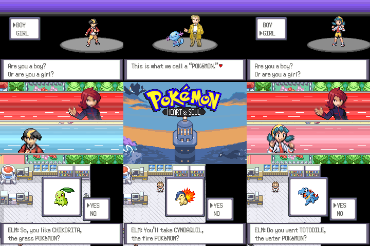
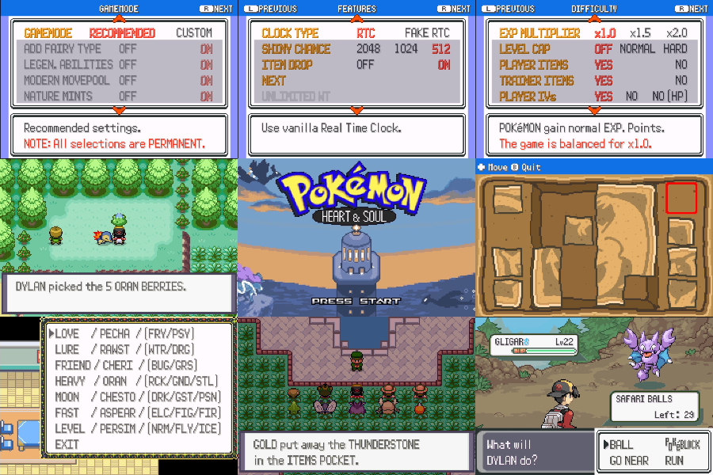
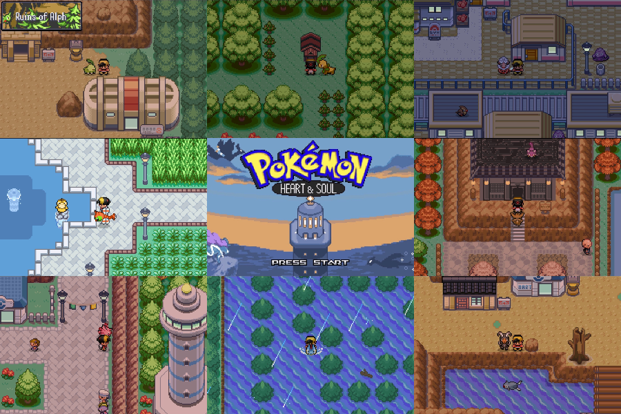

Full region playthrough
Travel through Johto in a complete adventure that keeps the spirit of the original while delivering a cleaner and more polished journey.
Player documentation

These pages are being rebuilt and are not finished. Numbers come straight from the game and should be accurate, but pages are still missing, wording is rough, and some sections have not been checked yet. Don't rely on this as a complete reference yet.
Welcome to the official Heart & Soul Documentation. This site is designed to help you navigate the game with quick access to routes, encounters, items, trainer teams, moves, abilities, and everything else you need for your run.
The majority of information is generated directly from the game, so it matches what is actually done within the ROM.
Pokémon Heart & Soul brings the classic Johto Region and its iconic story to the world of modern Game Boy Advance decompilation based hacking. Built on Modern Emerald and pokeemerald-expansion, this project offers a fresh take on the GSC/HGSS experience, blending key aspects of the Generation 2 and Generation 4 games, while incorporating many modern Quality of Life features, as well as some familiar mechanics from Gen 3 to Gen 9. Not only is Heart & Soul (HnS) a first-of-its-kind, fully completed, playtested, and largely faithful GSC remake / HGSS demake, it's also completely open source, and is intended to be a base for a new generation of Johto rom hacks.

Travel through Johto in a complete adventure that keeps the spirit of the original while delivering a cleaner and more polished journey.
Hidden routes, deeper exploration, richer encounters, and a broader sense of world-building all help the region feel alive.
Quality-of-life improvements help the experience flow naturally, so you can focus on the journey instead of unnecessary friction.

From stronger battle variety to new mechanics and richer team-building options, the combat experience is built to feel more dynamic and exciting.
A wider selection of creatures, forms, and evolution options gives the adventure more personality and flexibility.
Day and night changes, travel improvements, and a more responsive overworld make the region feel more alive and rewarding to explore.

Use the documentation to check encounters, items, trainer teams, move data, and completeness at a glance.
From Pokédex entries to breeding details and routes, the site is designed to make every part of the adventure easier to understand.
Whether you are chasing a specific team, completion goal, or a route encounter, the docs keep the information close at hand.
Nothing matches that search.